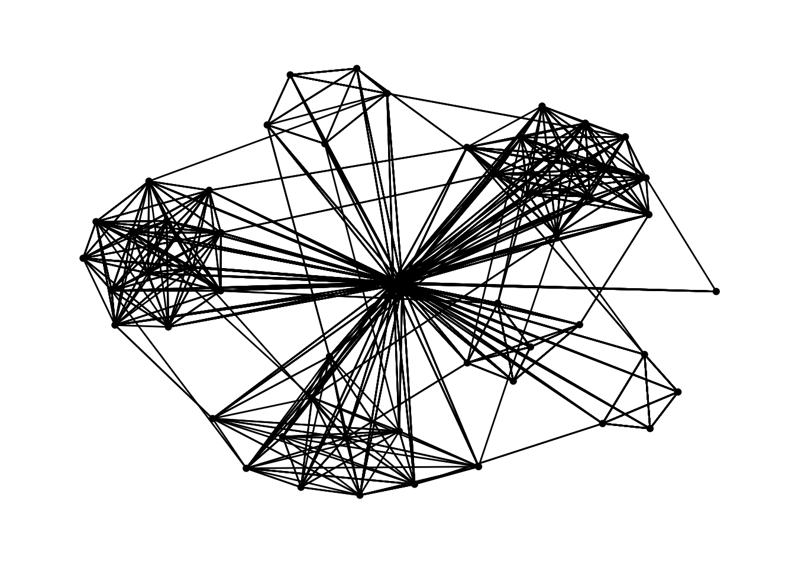
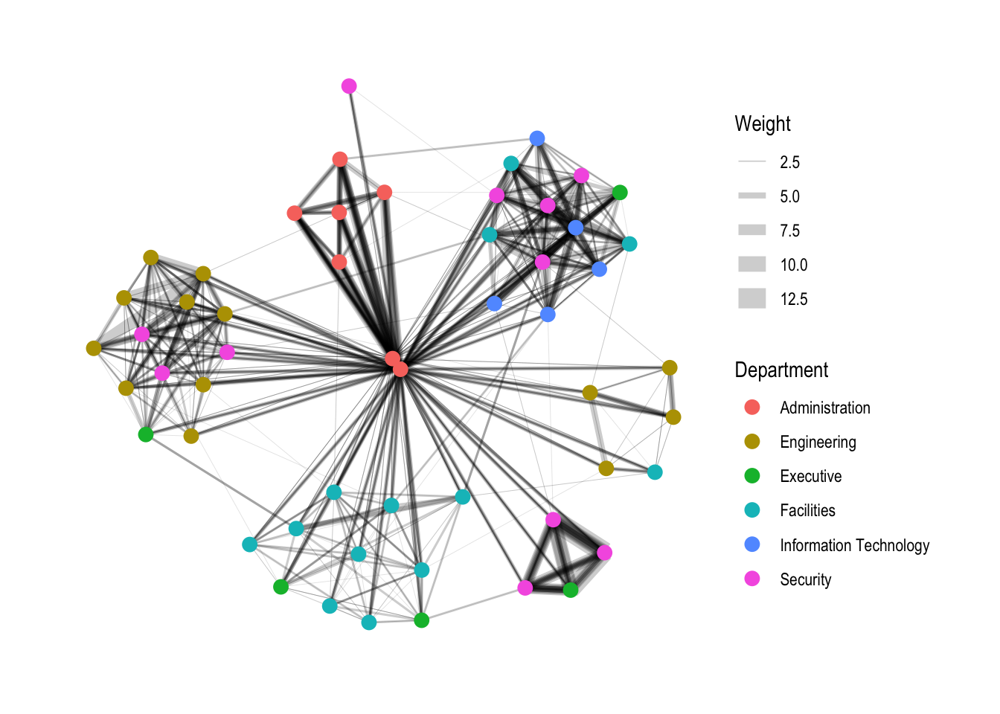
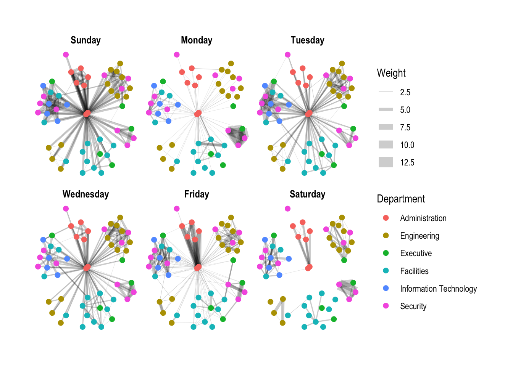
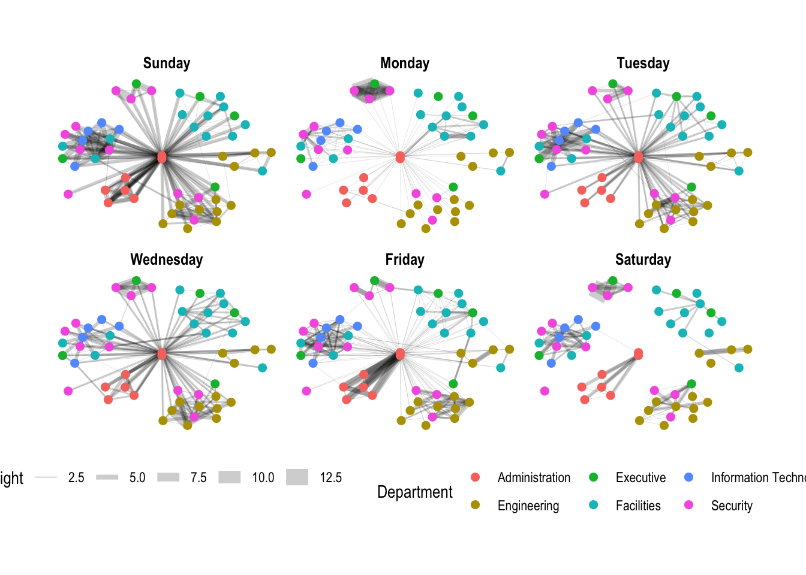
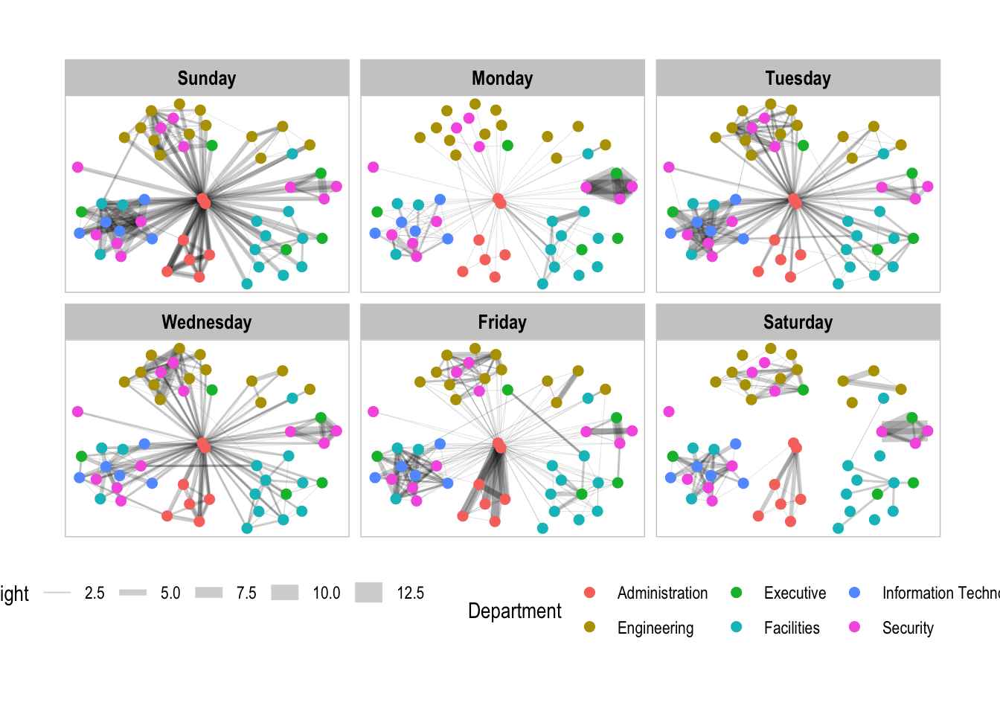
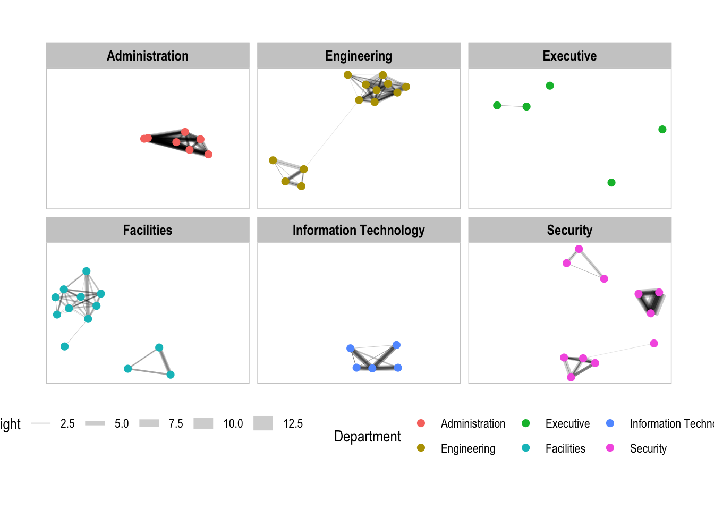
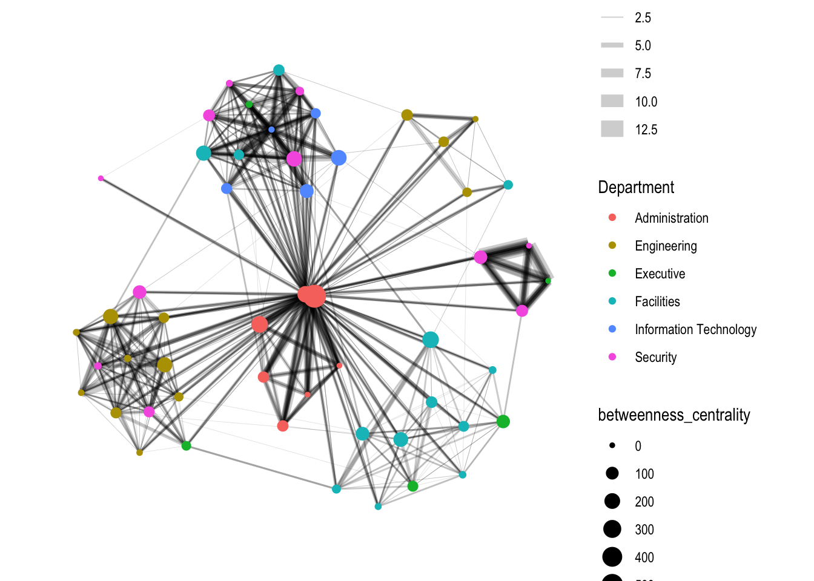
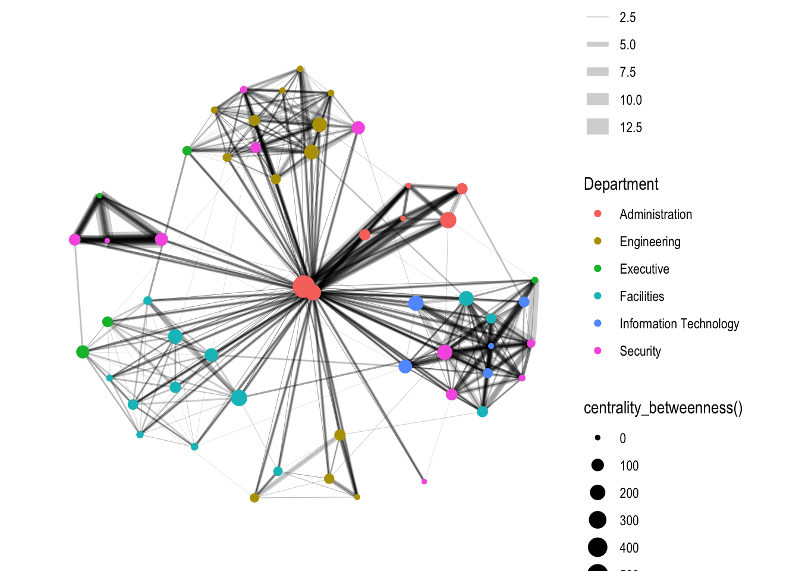

pacman::p_load(igraph, tidygraph, ggraph,
visNetwork, lubridate, clock,
tidyverse, graphlayouts)Hands-on Exercise 5
Getting started
- Using p_load() of pacman package to load the required libraries
- Importing data
GAStech_nodes <- read_csv("data/GAStech_email_node.csv")
GAStech_edges <- read_csv("data/GAStech_email_edge-v2.csv")2.1 Reviewing imported data
glimpse(GAStech_edges)Rows: 9,063
Columns: 8
$ source <dbl> 43, 43, 44, 44, 44, 44, 44, 44, 44, 44, 44, 44, 26, 26, 26…
$ target <dbl> 41, 40, 51, 52, 53, 45, 44, 46, 48, 49, 47, 54, 27, 28, 29…
$ SentDate <chr> "6/1/2014", "6/1/2014", "6/1/2014", "6/1/2014", "6/1/2014"…
$ SentTime <time> 08:39:00, 08:39:00, 08:58:00, 08:58:00, 08:58:00, 08:58:0…
$ Subject <chr> "GT-SeismicProcessorPro Bug Report", "GT-SeismicProcessorP…
$ MainSubject <chr> "Work related", "Work related", "Work related", "Work rela…
$ sourceLabel <chr> "Sven.Flecha", "Sven.Flecha", "Kanon.Herrero", "Kanon.Herr…
$ targetLabel <chr> "Isak.Baza", "Lucas.Alcazar", "Felix.Resumir", "Hideki.Coc…1. Data Wrangling
1.1 Reformat Date using lubridate
GAStech_edges <- GAStech_edges %>%
mutate(SendDate = dmy(SentDate)) %>%
mutate(Weekday = wday(SentDate,
label = TRUE,
abbr = FALSE))
GAStech_edges# A tibble: 9,063 × 10
source target SentDate SentTime Subject MainSubject sourceLabel targetLabel
<dbl> <dbl> <chr> <time> <chr> <chr> <chr> <chr>
1 43 41 6/1/2014 08:39 GT-Seism… Work relat… Sven.Flecha Isak.Baza
2 43 40 6/1/2014 08:39 GT-Seism… Work relat… Sven.Flecha Lucas.Alca…
3 44 51 6/1/2014 08:58 Inspecti… Work relat… Kanon.Herr… Felix.Resu…
4 44 52 6/1/2014 08:58 Inspecti… Work relat… Kanon.Herr… Hideki.Coc…
5 44 53 6/1/2014 08:58 Inspecti… Work relat… Kanon.Herr… Inga.Ferro
6 44 45 6/1/2014 08:58 Inspecti… Work relat… Kanon.Herr… Varja.Lagos
7 44 44 6/1/2014 08:58 Inspecti… Work relat… Kanon.Herr… Kanon.Herr…
8 44 46 6/1/2014 08:58 Inspecti… Work relat… Kanon.Herr… Stenig.Fus…
9 44 48 6/1/2014 08:58 Inspecti… Work relat… Kanon.Herr… Hennie.Osv…
10 44 49 6/1/2014 08:58 Inspecti… Work relat… Kanon.Herr… Isia.Vann
# ℹ 9,053 more rows
# ℹ 2 more variables: SendDate <date>, Weekday <ord>both dmy() and wday() are functions of lubridate package. lubridate is an R package that makes it easier to work with dates and times.
dmy() transforms the SentDate to Date data type.
wday() returns the day of the week as a decimal number or an ordered factor if label is TRUE. The argument abbr is FALSE keep the daya spells in full, i.e. Monday. The function will create a new column in the data.frame i.e. Weekday and the output of wday() will save in this newly created field.
the values in the Weekday field are in ordinal scale.
1.2 Wrangling Attributes
GAStech_edges data.frame consists of individual e-mail flow records which is not very useful. We will aggregate the individual by date, senders, receivers, main subject and day of the week.
GAStech_edges_aggregated <- GAStech_edges %>%
filter(MainSubject == "Work related") %>%
group_by(source, target, Weekday) %>%
summarise(Weight = n()) %>%
filter(source!=target) %>%
filter(Weight > 1) %>%
ungroup()
GAStech_edges_aggregated# A tibble: 1,372 × 4
source target Weekday Weight
<dbl> <dbl> <ord> <int>
1 1 2 Sunday 5
2 1 2 Monday 2
3 1 2 Tuesday 3
4 1 2 Wednesday 4
5 1 2 Friday 6
6 1 3 Sunday 5
7 1 3 Monday 2
8 1 3 Tuesday 3
9 1 3 Wednesday 4
10 1 3 Friday 6
# ℹ 1,362 more rows2. Creating network objects using tidygraph
Two functions of tidygraph package can be used to create network objects, they are:
tbl_graph()creates a tbl_graph network object from nodes and edges data.as_tbl_graph()converts network data and objects to a tbl_graph network. Below are network data and objects supported byas_tbl_graph()
2.1 Using tbl_graph() to build tidygraph data model
GAStech_graph <- tbl_graph(nodes = GAStech_nodes,
edges = GAStech_edges_aggregated,
directed = TRUE)
GAStech_graph# A tbl_graph: 54 nodes and 1372 edges
#
# A directed multigraph with 1 component
#
# A tibble: 54 × 4
id label Department Title
<dbl> <chr> <chr> <chr>
1 1 Mat.Bramar Administration Assistant to CEO
2 2 Anda.Ribera Administration Assistant to CFO
3 3 Rachel.Pantanal Administration Assistant to CIO
4 4 Linda.Lagos Administration Assistant to COO
5 5 Ruscella.Mies.Haber Administration Assistant to Engineering Group Manag…
6 6 Carla.Forluniau Administration Assistant to IT Group Manager
# ℹ 48 more rows
#
# A tibble: 1,372 × 4
from to Weekday Weight
<int> <int> <ord> <int>
1 1 2 Sunday 5
2 1 2 Monday 2
3 1 2 Tuesday 3
# ℹ 1,369 more rowsThe output above reveals that GAStech_graph is a tbl_graph object with 54 nodes and 4541 edges.
The command also prints the first six rows of “Node Data” and the first three of “Edge Data”.
It states that the Node Data is active. The notion of an active tibble within a tbl_graph object makes it possible to manipulate the data in one tibble at a time.
2.2 Changing the active object
GAStech_graph %>%
activate(edges) %>%
arrange(desc(Weight))# A tbl_graph: 54 nodes and 1372 edges
#
# A directed multigraph with 1 component
#
# A tibble: 1,372 × 4
from to Weekday Weight
<int> <int> <ord> <int>
1 40 41 Saturday 13
2 41 43 Monday 11
3 35 31 Tuesday 10
4 40 41 Monday 10
5 40 43 Monday 10
6 36 32 Sunday 9
# ℹ 1,366 more rows
#
# A tibble: 54 × 4
id label Department Title
<dbl> <chr> <chr> <chr>
1 1 Mat.Bramar Administration Assistant to CEO
2 2 Anda.Ribera Administration Assistant to CFO
3 3 Rachel.Pantanal Administration Assistant to CIO
# ℹ 51 more rows2.3 Plotting Static Network Graphs with ggraph package
ggraph is an extension of ggplot2, making it easier to carry over basic ggplot skills to the design of network graphs.
As in all network graph, there are three main aspects to a ggraph's network graph, they are:
The code chunk below uses ggraph(), geom-edge_link() and geom_node_point() to plot a network graph by using GAStech_graph. Before your get started, it is advisable to read their respective reference guide at least once.
ggraph(GAStech_graph) +
geom_edge_link() +
geom_node_point()
2.3.1. Changing the default network graph theme
g <- ggraph(GAStech_graph) +
geom_edge_link(aes(colour = 'grey50')) +
geom_node_point(aes(colour = 'grey40'))
g + theme_graph(background = 'grey10',
text_colour = 'white')
2.3.2. Plot network graph using Fruchterman and Reingold layout
g <- ggraph(GAStech_graph,
layout = "fr") +
geom_edge_link(aes()) +
geom_node_point(aes())
g + theme_graph()
2.3.3. Modifying network nodes
Modifying the nodes to the respective departments
g <- ggraph(GAStech_graph,
layout = "with_gem") +
geom_edge_link(aes()) +
geom_node_point(aes(colour = Department,
size = 3))
g + theme_graph()Refer to 27.5.4 for layout here
2.3.4. Modifying edges
g <- ggraph(GAStech_graph,
layout = "nicely") +
geom_edge_link(aes(width=Weight),
alpha=0.2) +
scale_edge_width(range = c(0.1, 5)) +
geom_node_point(aes(colour = Department),
size = 3)
g + theme_graph()
3. Creating facet graphs
Another very useful feature of ggraph is faceting. This technique can be used to reduce edge over-plotting in a very meaning way by spreading nodes and edges out based on their attributes. There are three functions in ggraph to implement faceting, they are:
facet_nodes() whereby edges are only draw in a panel if both terminal nodes are present here,
facet_edges() whereby nodes are always drawn in al panels even if the node data contains an attribute named the same as the one used for the edge facetting, and
facet_graph() faceting on two variables simultaneously.
3.1 Working with facet_edges()
set_graph_style()
g <- ggraph(GAStech_graph,
layout = "nicely") +
geom_edge_link(aes(width=Weight),
alpha=0.2) +
scale_edge_width(range = c(0.1, 5)) +
geom_node_point(aes(colour = Department),
size = 2)
g + facet_edges(~Weekday)
3.2 Working with facet_edges()
set_graph_style()
g <- ggraph(GAStech_graph,
layout = "nicely") +
geom_edge_link(aes(width=Weight),
alpha=0.2) +
scale_edge_width(range = c(0.1, 5)) +
geom_node_point(aes(colour = Department),
size = 2) +
#to change legend to the bottom
theme(legend.position = 'bottom')
g + facet_edges(~Weekday)
3.3 A framed facet graph
set_graph_style()
g <- ggraph(GAStech_graph,
layout = "nicely") +
geom_edge_link(aes(width=Weight),
alpha=0.2) +
scale_edge_width(range = c(0.1, 5)) +
geom_node_point(aes(colour = Department),
size = 2)
g + facet_edges(~Weekday) +
th_foreground(foreground = "grey80",
border = TRUE) +
theme(legend.position = 'bottom')
facet_nodes() is used for the following example.
3.4. Working with facet_nodes()
set_graph_style()
g <- ggraph(GAStech_graph,
layout = "nicely") +
geom_edge_link(aes(width=Weight),
alpha=0.2) +
scale_edge_width(range = c(0.1, 5)) +
geom_node_point(aes(colour = Department),
size = 2)
g + facet_nodes(~Department)+
th_foreground(foreground = "grey80",
border = TRUE) +
theme(legend.position = 'bottom')
4. Network Metrics Analysis
4.1 Computing centrality indices
There are four well-known centrality measures, namely: degree, betweenness, closeness and eigenvector.
g <- GAStech_graph %>%
mutate(betweenness_centrality = centrality_betweenness()) %>%
ggraph(layout = "fr") +
geom_edge_link(aes(width=Weight),
alpha=0.2) +
scale_edge_width(range = c(0.1, 5)) +
geom_node_point(aes(colour = Department,
size=betweenness_centrality))
g + theme_graph()
4.2 Visualizing network metrics
g <- GAStech_graph %>%
ggraph(layout = "fr") +
geom_edge_link(aes(width=Weight),
alpha=0.2) +
scale_edge_width(range = c(0.1, 5)) +
geom_node_point(aes(colour = Department,
size = centrality_betweenness()))
g + theme_graph()
4.3 Visualizing Community
tidygraph package inherits many of the community detection algorithms imbedded into igraph and makes them available to us, including Edge-betweenness (group_edge_betweenness), Leading eigenvector (group_leading_eigen), Fast-greedy (group_fast_greedy), Louvain (group_louvain), Walktrap (group_walktrap), Label propagation (group_label_prop), InfoMAP (group_infomap), Spinglass (group_spinglass), and Optimal (group_optimal).
group_edge_betweenness() is used.
g <- GAStech_graph %>%
mutate(community = as.factor(group_edge_betweenness(weights = Weight, directed = TRUE))) %>%
ggraph(layout = "fr") +
geom_edge_link(aes(width=Weight),
alpha=0.2) +
scale_edge_width(range = c(0.1, 5)) +
geom_node_point(aes(colour = community))
g + theme_graph()
5. Interactive Network Graph with visNetwork
visNetwork() function uses a nodes list and edges list to create an interactive graph.
The nodes list must include an "id" column, and the edge list must have "from" and "to" columns.
The function also plots the labels for the nodes, using the names of the actors from the "label" column in the node list.
5.1 Data Preparation
GAStech_edges_aggregated <- GAStech_edges %>%
left_join(GAStech_nodes, by = c("sourceLabel" = "label")) %>%
rename(from = id) %>%
left_join(GAStech_nodes, by = c("targetLabel" = "label")) %>%
rename(to = id) %>%
filter(MainSubject == "Work related") %>%
group_by(from, to) %>%
summarise(weight = n()) %>%
filter(from!=to) %>%
filter(weight > 1) %>%
ungroup()5.2 Plotting the interactive network graph
visNetwork(GAStech_nodes,
GAStech_edges_aggregated) %>%
visIgraphLayout(layout = "layout_with_fr") 5.3 Working with visual attributes - Nodes
visNetwork() looks for a field called "group" in the nodes object and colour the nodes according to the values of the group field.
visNetwork shades the nodes by assigning unique colour to each category in the group field.
visNetwork(GAStech_nodes,
GAStech_edges_aggregated) %>%
visIgraphLayout(layout = "layout_with_fr") %>%
visLegend() %>%
visLayout(randomSeed = 123)5.4 Working with visual attributes - Edges
visEdges() is used to symbolise the edges.
- The argument arrows is used to define where to place the arrow.
- The smooth argument is used to plot the edges using a smooth curve.
visNetwork(GAStech_nodes,
GAStech_edges_aggregated) %>%
visIgraphLayout(layout = "layout_with_fr") %>%
visEdges(arrows = "to",
smooth = list(enabled = TRUE,
type = "curvedCW")) %>%
visLegend() %>%
visLayout(randomSeed = 123)5.5. Incorporate Interactivity
visOptions() is used to incorporate interactivity features in the data visualisation.
- The argument highlightNearest highlights nearest when clicking a node.
- The argument nodesIdSelection adds an id node selection creating an HTML select element.
visNetwork(GAStech_nodes,
GAStech_edges_aggregated) %>%
visIgraphLayout(layout = "layout_with_fr") %>%
visOptions(highlightNearest = TRUE,
nodesIdSelection = TRUE) %>%
visLegend() %>%
visLayout(randomSeed = 123)